Imagens do material · exsudato
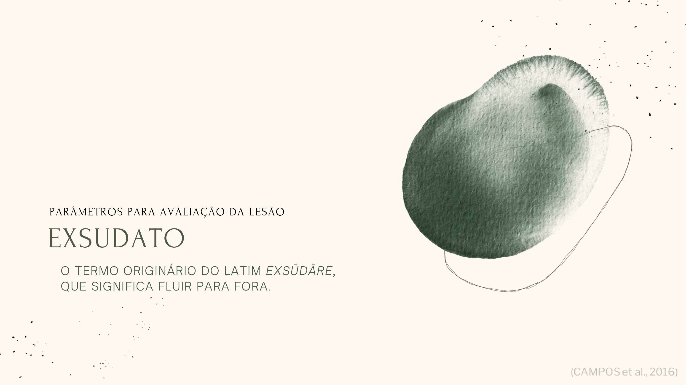
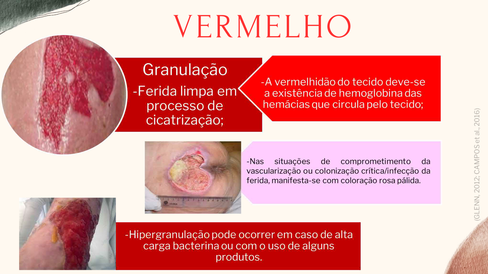
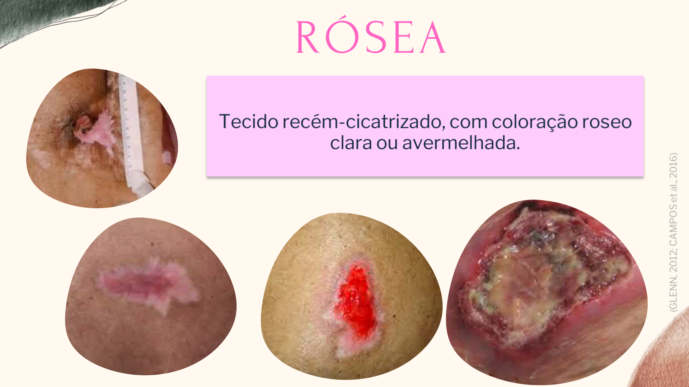

Faculdade de Enfermagem · UFPel · Fundada em 1976
Guia interativo sobre fatores que interferem na cicatrização, avaliação sistemática de feridas, tecidos, exsudato, bordas e escalas clínicas.
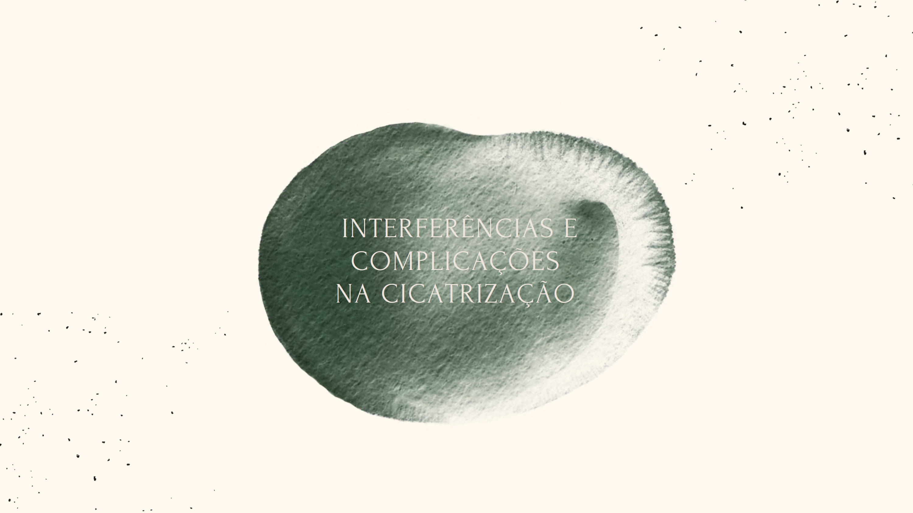
Módulo 01
A cicatrização é influenciada por dois grupos de fatores: os relacionados à condição sistêmica do paciente e os locais, inerentes à própria ferida.
(SÃO PAULO, 2022)
Imagens do material · visão geral
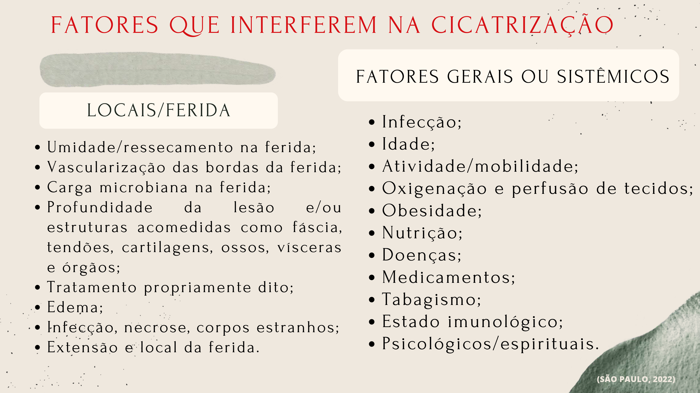
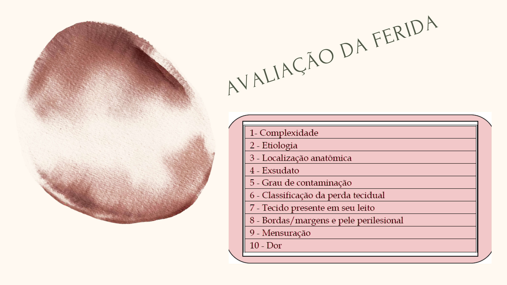
Módulo 02
A avaliação sistemática da ferida contempla 10 dimensões essenciais para o diagnóstico de enfermagem e o planejamento do cuidado.
Avaliação Global
Anamnese completa, exame físico geral e específico, exames laboratoriais e de imagem integram a avaliação da pessoa.
Dimensão, tipo de tecido, margem, pele ao redor, tipo e quantidade do exsudato, presença de odor e intensidade da dor → Registro de Enfermagem.
Condições emocionais, suporte familiar e social, crenças e aspectos espirituais impactam diretamente no processo de cicatrização.
Capacidade de autocuidado, acesso ao serviço de saúde, condições socioeconômicas e cumprimento das orientações terapêuticas.
Imagens do material · avaliação clínica
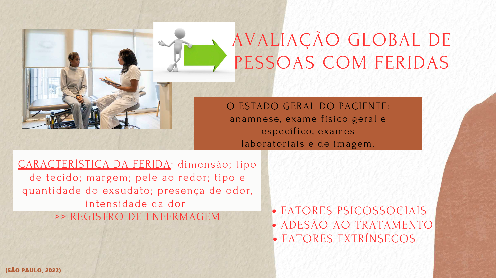
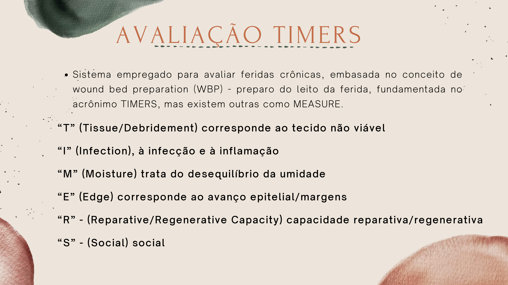
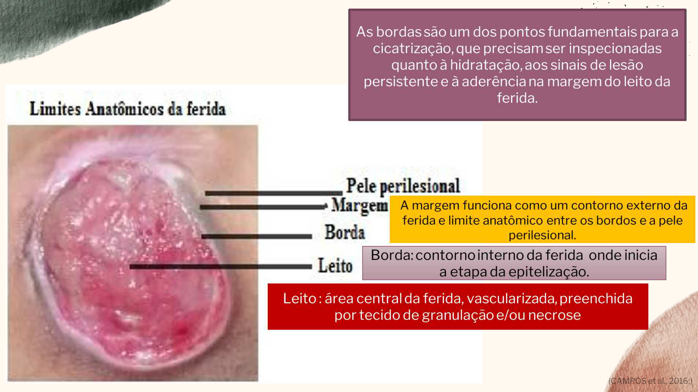
Módulo 03
Sistema empregado para avaliar feridas crônicas, baseado no conceito de wound bed preparation (WBP) — preparo do leito da ferida.
Framework TIME
Imagens do material · TIME e TIMERS
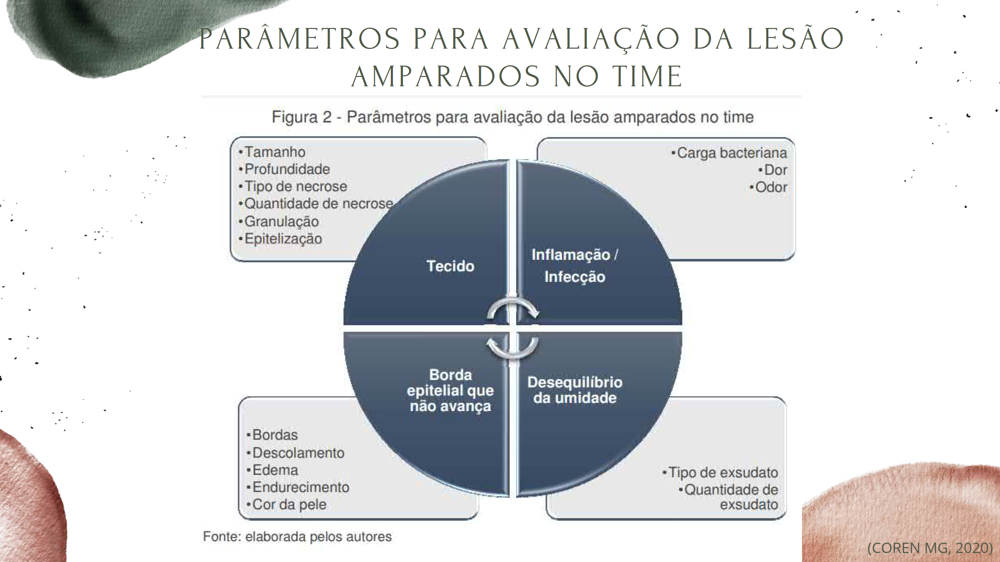
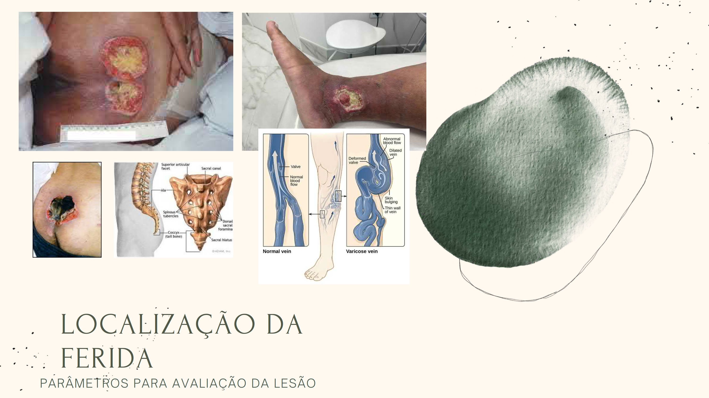
Módulo 04
Cada estrutura da ferida possui função e nomenclatura específica, fundamentais para o registro clínico e para a escolha do tratamento adequado.
Área central da ferida, vascularizada, preenchida por tecido de granulação e/ou necrose. É onde ocorre a regeneração tecidual.
Contorno interno da ferida, onde inicia a etapa da epitelização. Deve estar aderida ao leito para permitir a migração celular.
Contorno externo da ferida — limite anatômico entre os bordos e a pele perilesional. Funciona como fronteira de cicatrização.
Tecido sadio ao redor da ferida. Deve ser inspecionada quanto à hidratação, sinais de lesão persistente e aderência à margem do leito.
Imagens do material · anatomia e limites
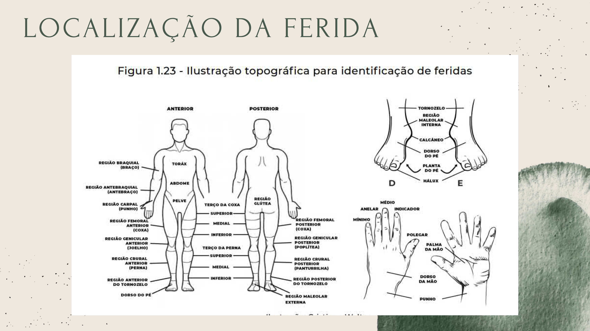
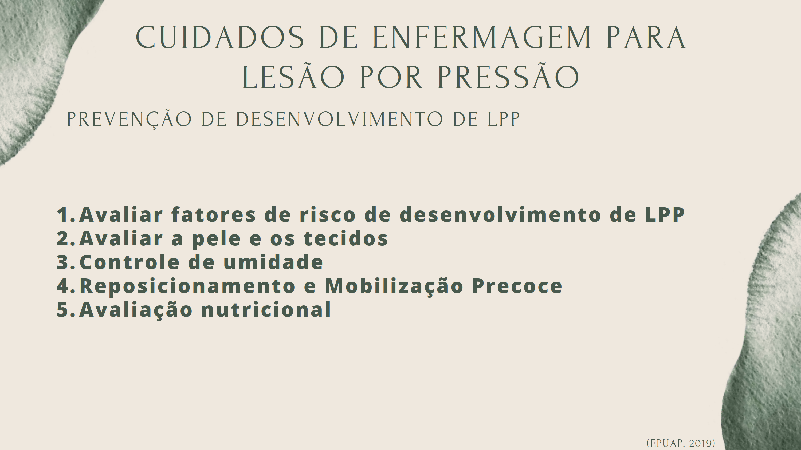
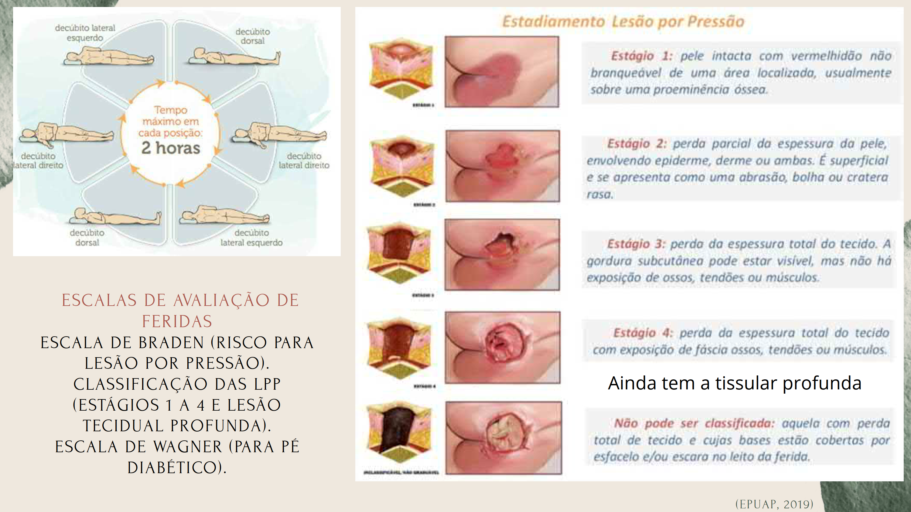
Módulo 05
O sistema RYB e a classificação por cor orientam a conduta terapêutica com base no tipo de tecido predominante no leito da ferida.
Sistema RYB
Tecido viável, de coloração vermelho vivo, formado por capilares neoformados e fibroblastos. Indica ativa cicatrização e boa vascularização do leito.
🔴 Vermelho vivoTecido viável, recém-cicatrizado, com coloração róseo-clara ou avermelhada. Representa a fase final de reepitelização da ferida.
🌸 Róseo / Rosa claroTecido inviável — escara. Células mortas desidratadas formam tecido duro e aderido. Deve ser removido via desbridamento para liberar a migração celular.
⬛ Preta · EscaraTecido inviável — esfacelo. Parcialmente solubilizado, contém bactérias, fibrina, elastina, colágeno e leucócitos. Pode estar frouxo ou firmemente aderido.
🟡 Amarela · EsfaceloImagens do material · tecidos e sistema RYB
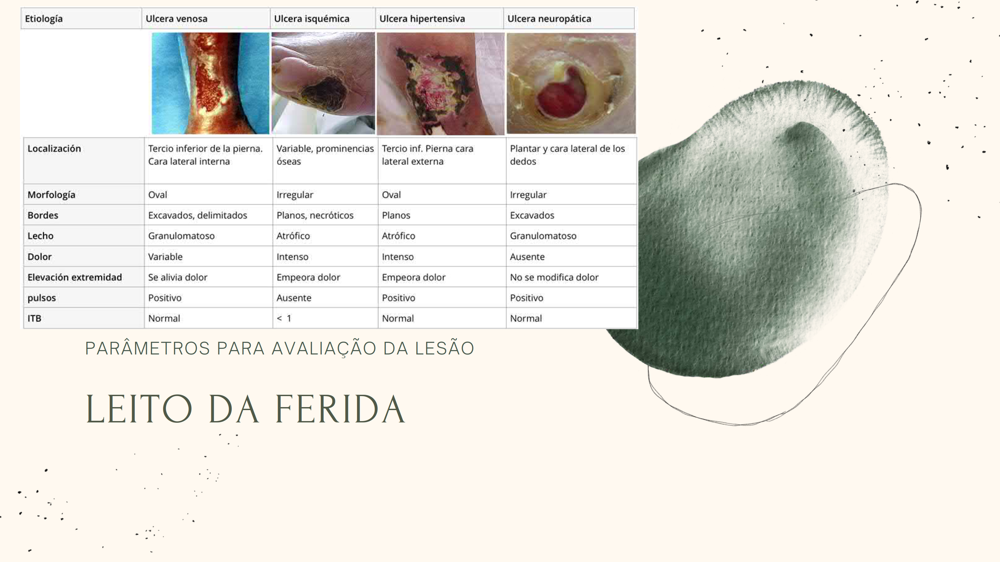
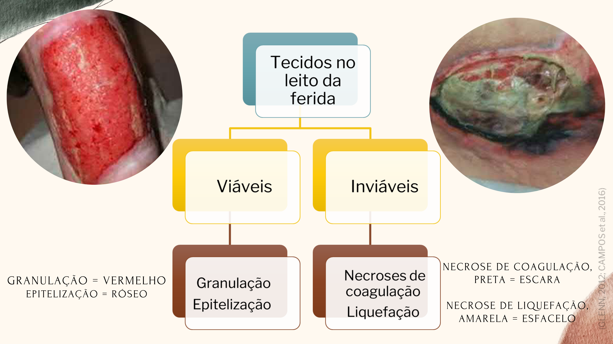
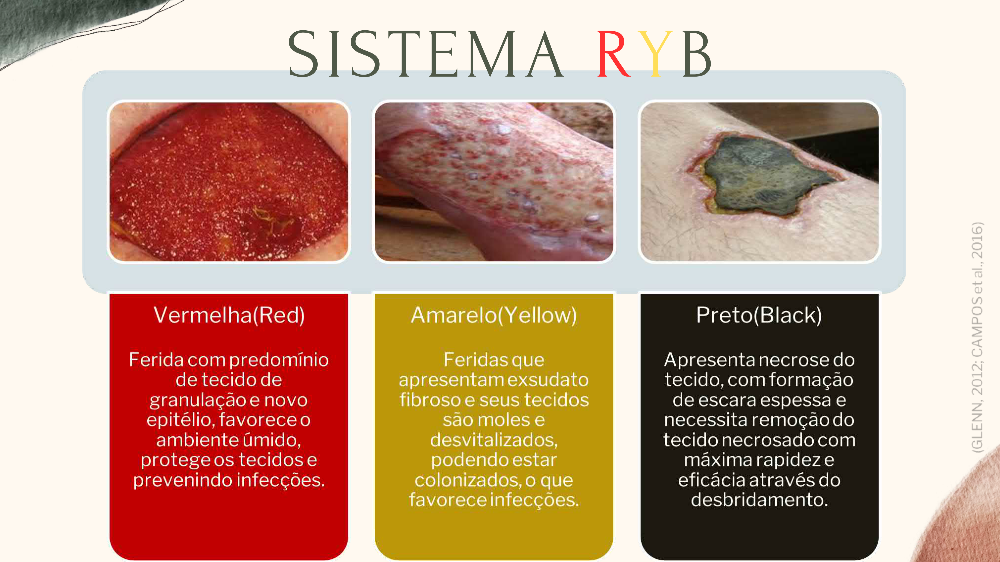
Módulo 06
Do latim exsūdāre — "fluir para fora". O exsudato indica aumento na permeabilidade vascular em área de injúria, caracterizando reação inflamatória.
Seco: leito seco, cobertura sem marcas, pode estar aderida.
Úmido: pouca a média quantidade visível ao retirar.
Saturado: cobertura primária saturada, troca necessária para proteger a borda.
Vazando: exsudato não absorvido pelo curativo primário, necessita cobertura com maior retenção.
Tipos · Consistência · Coloração
Claro e aquoso. Esperado durante todo o processo de cicatrização. Excesso pode indicar ICC, desnutrição ou fístulas.
Claro com pontos gelatinosos. Presença de fibrinas — indicativo de inflamação, pode estar associado a infecção.
Claro com pontos avermelhados/roseados. Normal na fase inflamatória e proliferativa; pode decorrer de remoção traumática de cobertura.
Leitoso, amarelado, amarronzado ou esverdeado, geralmente espesso. Composto de neutrófilos, células inflamatórias e patógenos. Indicativo de infecção.
Leitoso e amarelado, geralmente fino. Composto de exsudato seroso com presença de pus. Pode indicar infecção ou liquefação de necrose.
Avermelhado, espesso ou fino. Composto por glóbulos vermelhos, indicativo de rompimento de capilares ou trauma na ferida.
Volume
Leito seco, sem umidade visível. Cobertura sem marcas. Pode estar aderida à ferida.
Pouca a média quantidade visível ao retirar o curativo. Cobertura levemente marcada.
Cobertura primária saturada. Troca necessária para proteger a borda e a perilesão.
Exsudato não absorvido pelo curativo primário. Necessita cobertura com alta retenção.
Imagens do material · exsudato



Módulo 06b
As feridas podem gerar mau cheiro de intensidade variável por necrose tecidual ou pelo crescimento de bactérias específicas capazes de produzir odor (anaeróbios, Pseudomonas...).
| Odor | Características |
|---|---|
| Ausente | Sem odor perceptível. |
| Característico | Odor suportável, exalado no descobrimento da lesão; não impede a aproximação. |
| Fétido | Odor desagradável que leva à reação de afastamento por parte do profissional e dos familiares. |
| Pútrido | Odor fétido de grande intensidade, associado a carne em decomposição. Indica presença de necrose extensa ou infecção por anaeróbios. |
Fonte: Adaptado de Irion (apud CAMPOS et al., 2016)
Imagens do material · odor
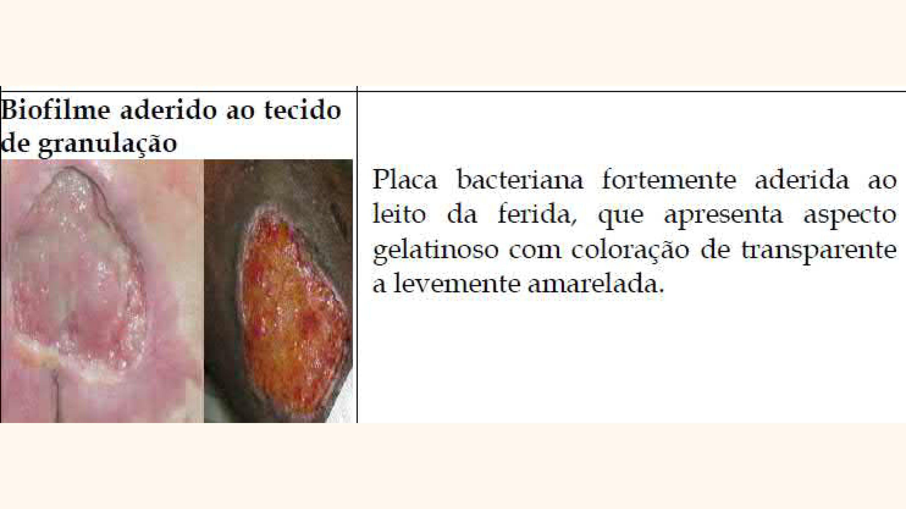
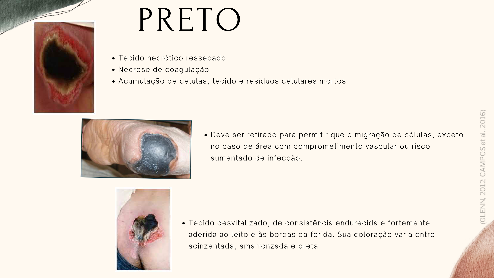
Módulo 07
As bordas são pontos fundamentais para a cicatrização e devem ser inspecionadas quanto à hidratação, sinais de lesão persistente e aderência ao leito da ferida.
Não há possibilidade de distinguir claramente o contorno da ferida. Dificulta a mensuração e o acompanhamento da evolução.
Plana e nivelada com o leito da ferida. Condição ideal para a migração de queratinócitos e o avanço da epitelização.
A falta de aderência ao leito pode propiciar a formação de túneis, trajetos fistulosos e abscessos.
⚠ Risco de formação de espaço morto
O leito da ferida é mais profundo do que a borda e a margem. Pode indicar insuficiência tecidual de base para a migração de células epiteliais.
Tecido de coloração amarela ou branca, de consistência endurecida e rígida, aderido ao leito, decorrente de áreas cicatrizadas patologicamente.
Sobreposição da camada córnea da epiderme, formando tecido espesso e endurecido de cor amarelada. Impede a migração celular.
Complicação comum na borda, margem e pele adjacente. A pele torna-se intumescida e esbranquiçada devido ao excesso de exsudatos e/ou curativos inadequados.
⚠ Controle de umidade prioritário
Borda e margem dobradas entre si. Impede o avanço epitelial. Em feridas cavitárias, preencher completamente com cobertura e gaze para evitar epibole.
⚠ Evitar espaço morto
A ferida cavitária exige preenchimento total. Objetivo: evitar epibole, infecção e necrose, realizando controle rigoroso de umidade no leito.
Imagens do material · bordas e perilesão
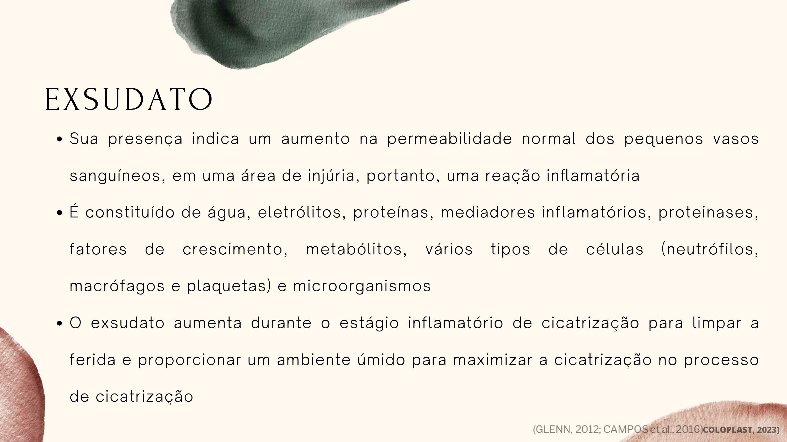
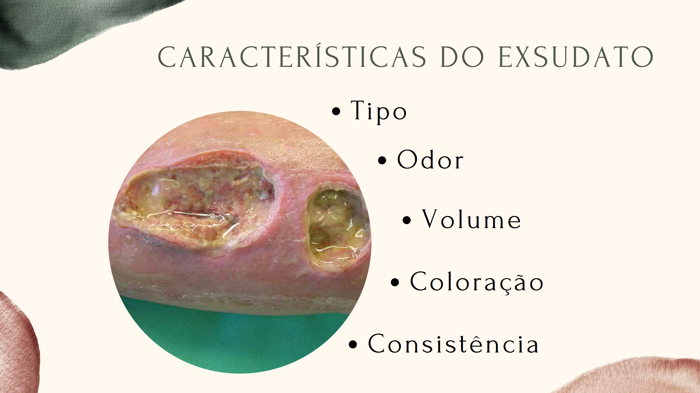
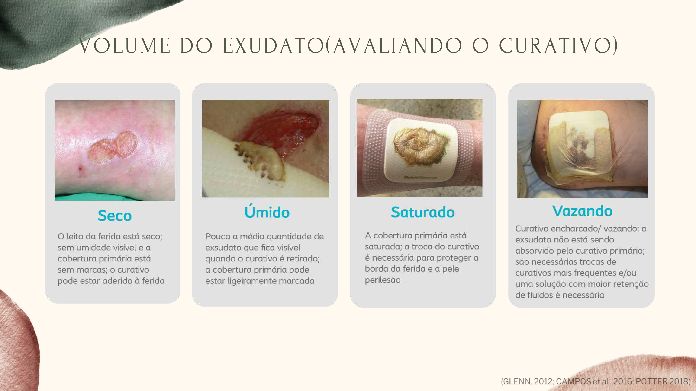
Módulo 08
A mensuração sistemática permite acompanhar a evolução da cicatrização ao longo do tempo e avaliar a efetividade do tratamento.
Fórmula para cálculo do volume da ferida · Registrar sempre com data e horário
Utilizar régua estéril descartável para mensurar comprimento e largura, sempre orientada da cabeça para os pés (comprimento) e ombro a ombro (largura).
Para mensurar a profundidade da ferida, utilizar swab estéril introduzido perpendicularmente ao leito até a sua base, marcar o nível e medir com régua.
A fotografia clínica é fundamental para o acompanhamento evolutivo. Realizar sempre com régua visível, boa iluminação e ângulo padronizado.
Imagens do material · mensuração
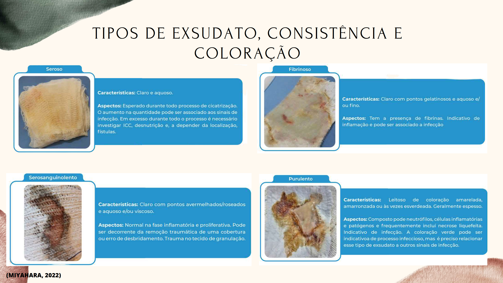
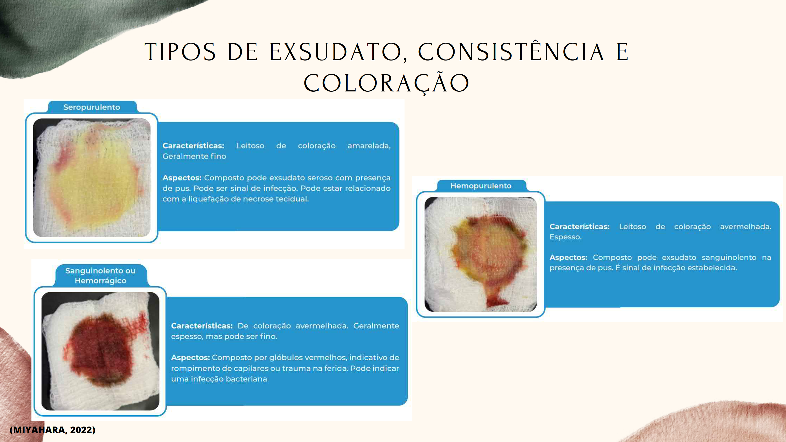
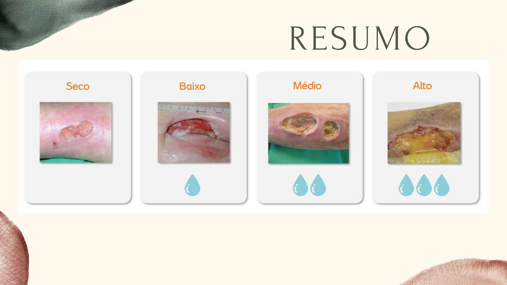
Módulo 09
A dor relacionada à ferida pode ser cutânea, visceral, isquêmica ou neuropática, cada uma com características específicas que orientam a conduta clínica.
Oriunda de receptores na pele. Aguda, bem localizada. Geralmente se intensifica na troca de curativo ou ao toque.
Difusa, mal localizada. Associada a lesões profundas com comprometimento de vísceras ou órgãos internos.
Constante em repouso; piora com elevação dos membros. Associada a insuficiência arterial — pulsos distais ausentes ou reduzidos.
Parestesias, queimação, dormência. Pode ser ausente em úlceras neuropáticas (pé diabético). Não se modifica com elevação.
O paciente atribui um número de 0 a 10 à intensidade da dor. Simples e amplamente aplicada.
Categorias verbais: Sem dor · Dor leve · Dor moderada · Dor forte · Dor severa · Pior dor possível.
Utilizada em crianças ou pacientes com dificuldade de comunicação verbal. Faces expressam intensidade crescente de dor (1 a 6).
Imagens do material · dor

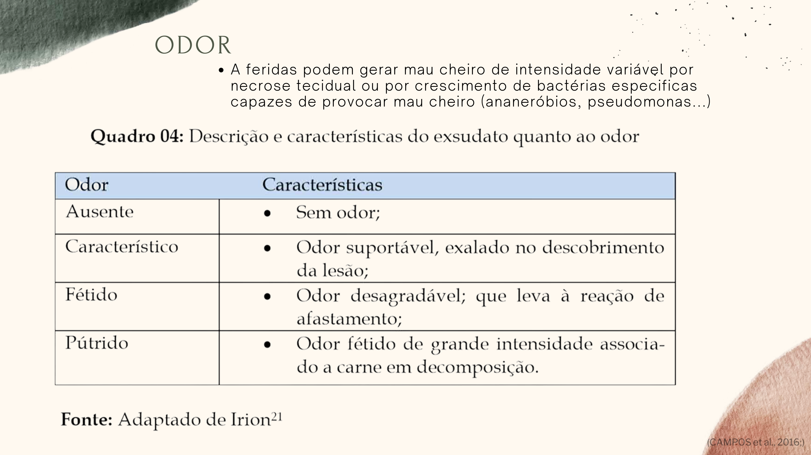
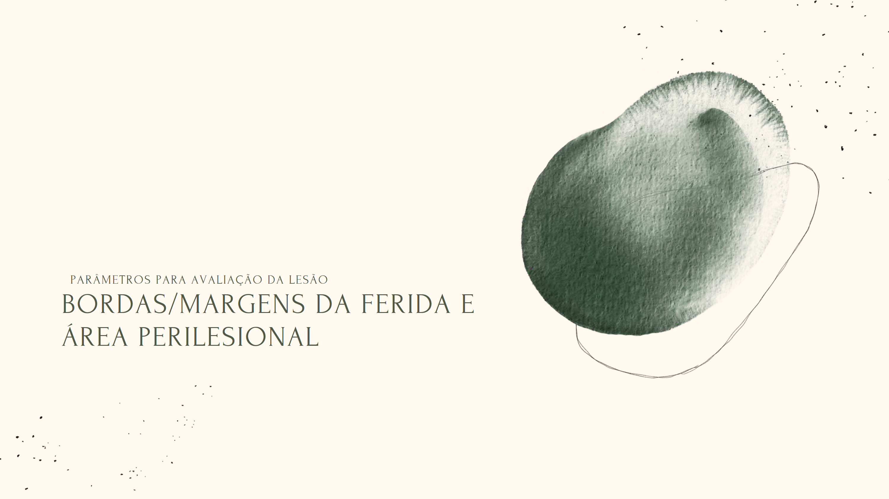
Módulo 10
A classificação das Lesões por Pressão (LPP) orienta o cuidado específico a cada estágio, da superficial à comprometimento profundo dos tecidos.
Pele intacta com vermelhidão não branqueável de uma área localizada, usualmente sobre uma proeminência óssea.
Pele íntegraPerda parcial da espessura da pele, envolvendo epiderme, derme ou ambas. Superficial — apresenta-se como abrasão, bolha ou cratera rasa.
Perda parcialPerda da espessura total do tecido. A gordura subcutânea pode estar visível, mas não há exposição de ossos, tendões ou músculos.
Espessura totalPerda da espessura total do tecido com exposição de fáscia, ossos, tendões ou músculos. Risco elevado de osteomielite.
Estruturas expostasÁrea localizada de pele descolorada — vermelho-escuro, marrom ou púrpura. Pode estar intacta ou apresentar bolha com sangue.
Origem profundaPerda total de tecido cujas bases estão completamente cobertas por esfacelo e/ou escara no leito da ferida. Não é possível determinar o estágio real.
Desbridamento necessárioImagens do material · LPP


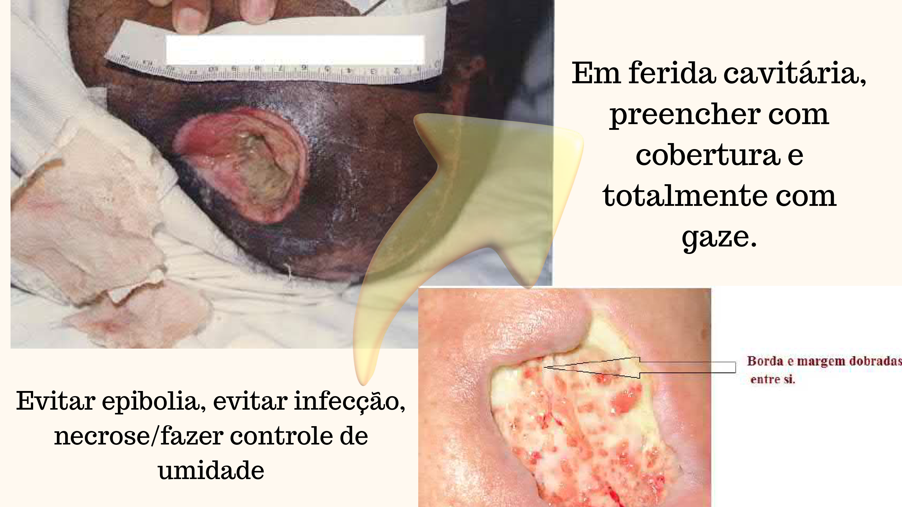
Módulo 10b
As cinco intervenções prioritárias recomendadas pelo EPUAP (2019) para prevenir o desenvolvimento de Lesões por Pressão.
Imagens do material · prevenção
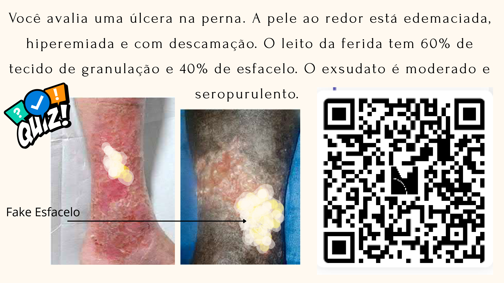
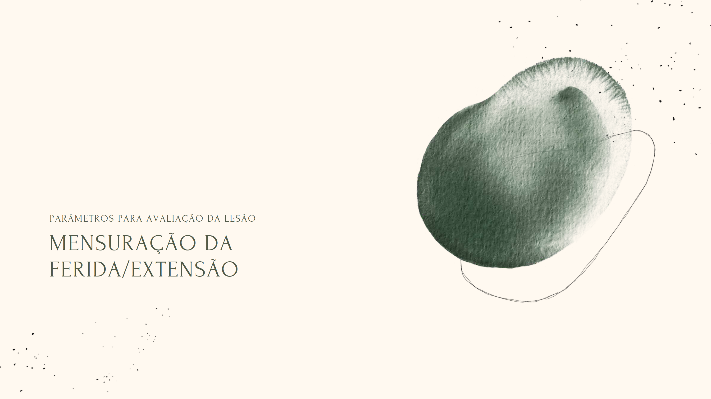

Fixação
Teste seus conhecimentos sobre avaliação e complicações na cicatrização.
Galeria complementar
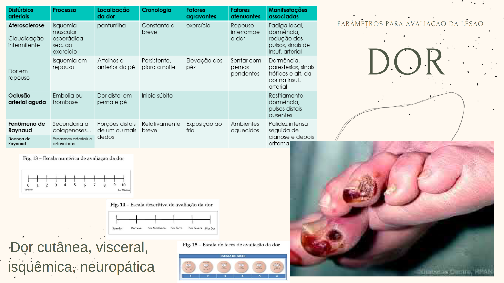
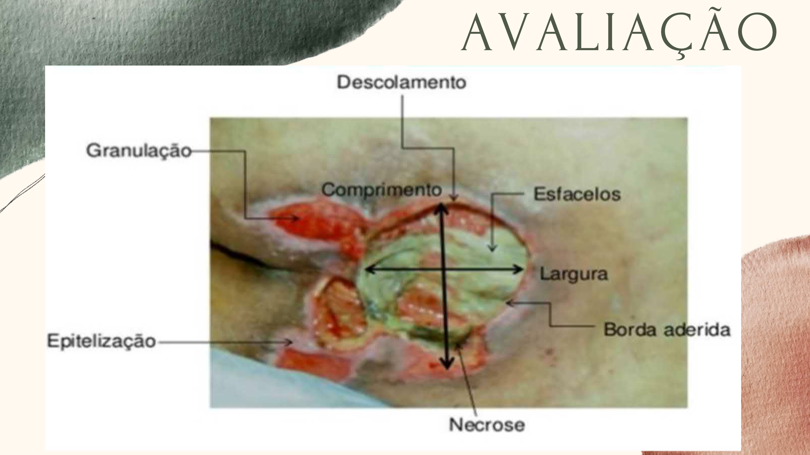
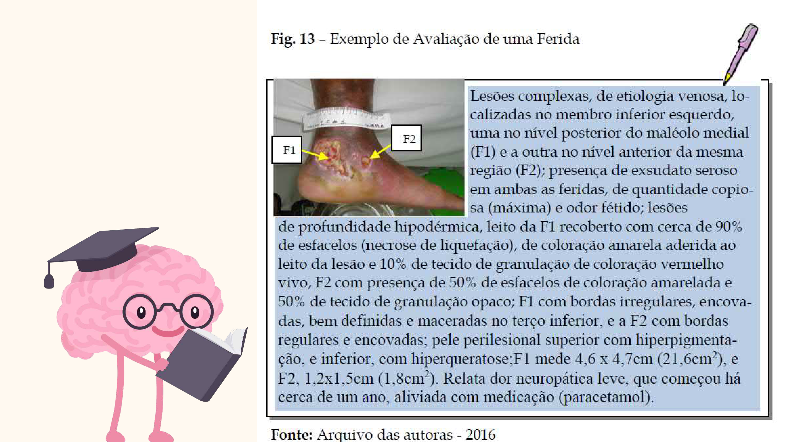